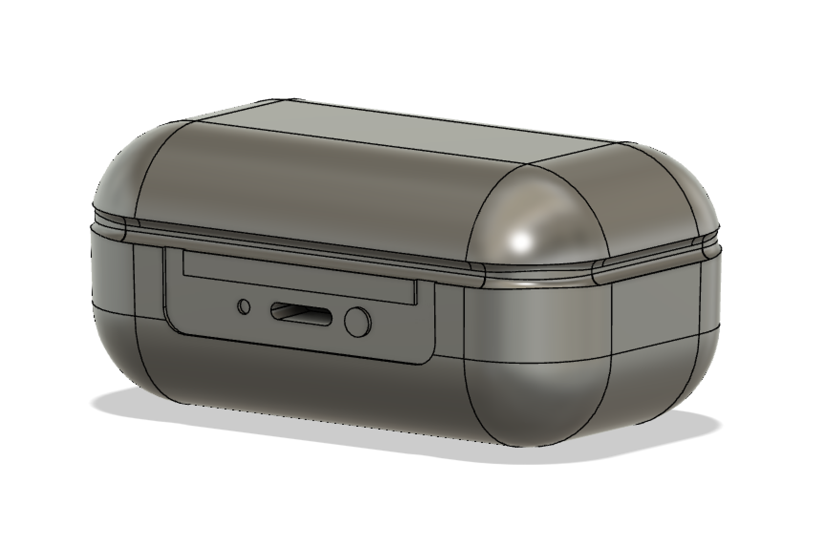
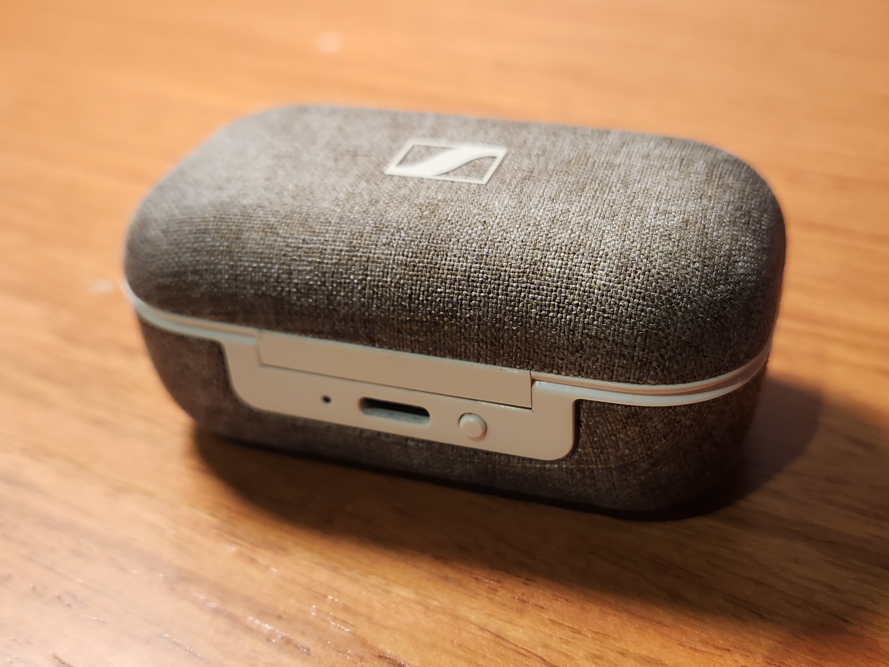
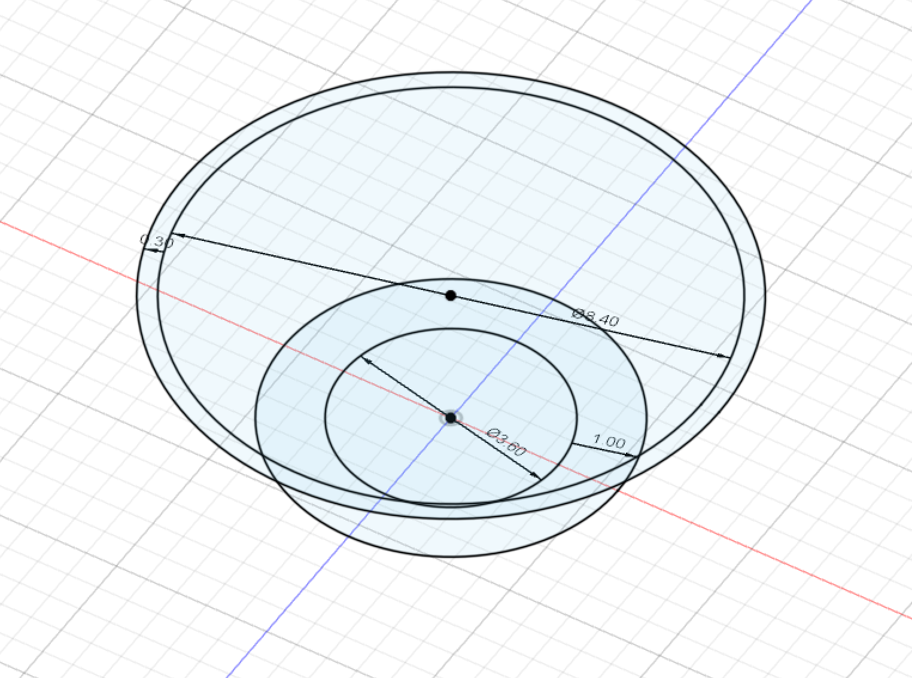
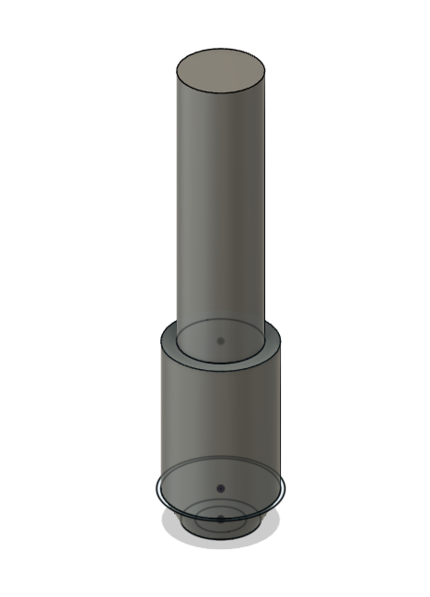
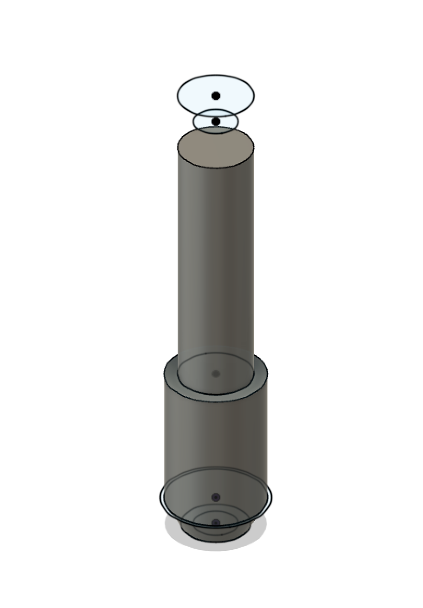
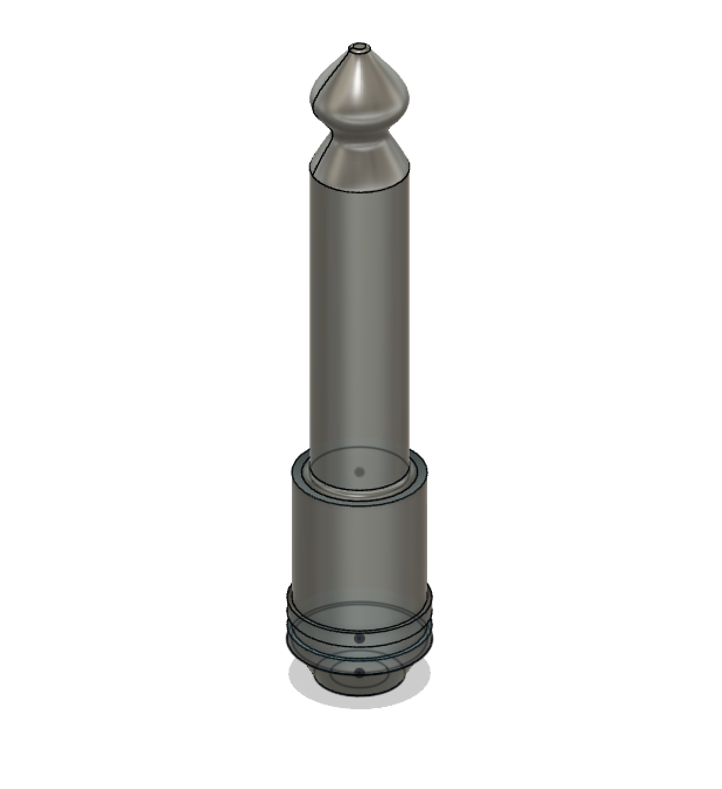
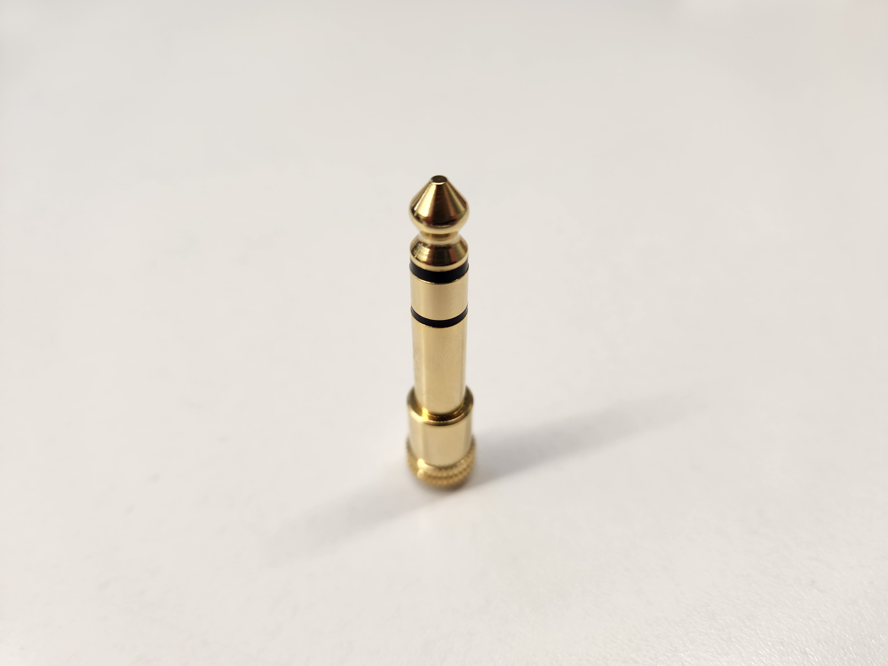

For the first model, I decided to model the case of my earbuds in the closed position. Now in order to begin the model, I measured the basic dimensions of the base of the case, then made a sketch and extruded that sketch to the correct height.
The next two steps were relatively simple; adding fillets to round off the corners of the extruded prism, and then to add a new sketch on one of the faces for details such as the LED hole, the charging port, and the button next to it. After that, it was as simple as extruding those profiles in order to add the details.
Finally, the last detail was the notch that goes around the entire case, separating the case into the top and bottom halves. This was done using a sketch on an offset plane, along with the offset, extrude, and fillet tools.
Here's the case in real life!
The next model I chose to CAD was this quarter-inch audio jack adapter that I use for my headphones occasionally. For this model, I used a clever sequence of loft's and extrudes, along with some fillets for detail. I first started with the base sketch.
I then lofted and extruded these features to create the first section of the jack.
Then I used offset planes to create the next layer of sketches to loft.
The last step was to loft these features and then use a fillet to add details to the print.
Heres the jack in real life for comparison!
